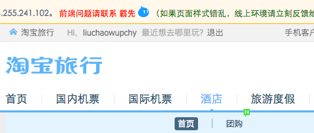
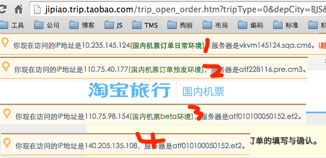
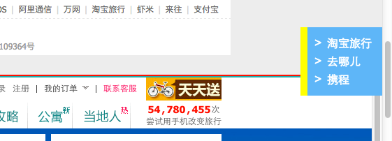
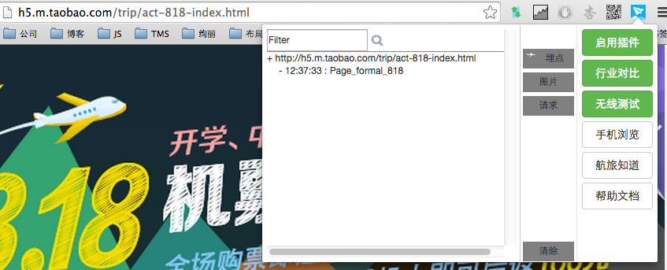
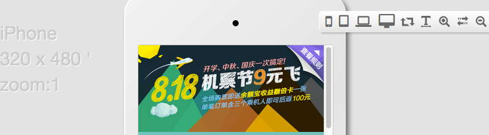

hudge 航旅小二专属的浏览器插件，提升您的工作效率
hudge [hju:dʒ] ,休住
源自 李清照《渔家傲》中的“风休住”。
插件主要是提升大家的开发效率，把所有流程、协作、非系统 的烦人工作统统抽象入工具，提供一“件”式服务
1.页面TMS模块直接维护
- 用户：运营 & 前端
- 功能：在线上页面直接显示TMS维护入口
场景：找不到TMS编辑地址；不知道区块内容是vm维护还是TMS维护的
运营童鞋的福利来了！每次要维护一个页面，是不是都要问一圈人才能找到页面维护地址？当你看到页面因为TMS填错猛然抓瞎不知道该找谁处理时，这个插件能极大缩短bug存活时间。启用插件后，TMS编辑入口会直接在页面显示，点击编辑链接之后，将直接带你到TMS编辑页面。

前端只需添加注释：<!--TMS:793625 TITLE:我的机票订单页尾推广--> 即可
2.前端页面owner反馈
- 用户：所有小二
- 功能：显示页面的前端相关人员
场景：发现线上问题，不知道找谁处理
发现页面有问题的时候该找谁？产品？测试？开发？都可以！但是，可以很自豪的说，就算前端不是对这个页面最了解的，也绝对是对该找谁处理这个问题最了解的。
每个页面，我们都会给你展示前端owner，不管对不对得上，找他就对了。

3.测试环境ip和服务器信息展示
- 目标用户：开发、测试
- 功能：显示日常项目环境的ip地址和服务器信息；日常环境和线上环境一键切换
场景：host切换后，不知道有没有生效；想知道页面是否访问了对应的测试环境
对于开发和测试童鞋来说，平时最痛苦的莫过于各种测试环境切换了。我到底在哪套环境？host切换有没有生效？插件会在页头直接展示当前页面ip，让答案变得更直观。
另外，也提供了线上环境和日常环境的対切，免去大家手动改url或者翻收藏夹的痛苦。

4.行业对比
- 用户：所有小二
- 功能：和携程、去哪儿的页面对比
场景：搜索国内(国际)机票的时候，想知道与携程、去哪儿相比，哪一家更有价格优势
目前已经提供的有“特别推荐”的【国内机票搜索页面对比、国际机票搜索页面对比】、【所有频道页面在淘宝旅行、携程、去哪儿的对比】。以后还会开发更多更好玩的功能。
这个功能可以方便我们在购买机票的时候，实时实地地对比淘宝旅行、去哪儿、携程的价格。点亮“行业对比”按钮，在页面右侧会有一个导航出现（如果没有，说明这个页面还没有对比功能），点击导航链接，就可以看到效果了。

5.无线测试
- 用户：无线前端、开发
- 功能：观察aplus埋点、页面请求、图片质量
场景：查看aplus埋点；检测图片质量是否合格
感谢卜居提供的功能——在Chrome中测试H5页面时，更新直观的将aplus埋点显示出来，省去在js.do请求中找参数的时间。

6.手机浏览页面
- 用户：所有小二
- 功能：在虚拟的手机容器中查看页面展示效果
场景：开发完成了一个页面，想先在多终端简单查看一下适配行
这个功能主要是方便大家做多终端的适配性测试。 使用方法：点击导航栏的航旅插件图标，在弹出的配置框中点击“手机浏览”按钮
